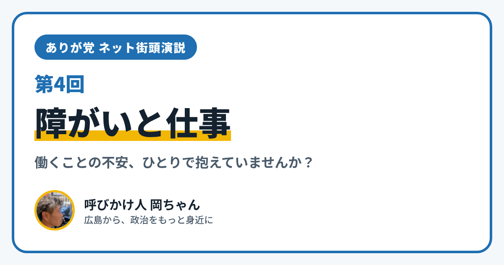

ありが党 ネット街頭演説 第4回｜障がいと仕事

こんにちは、ありが党の呼びかけ人、岡ちゃんです。今日のネット街頭演説のテーマは「障がいと仕事」です。
働きたい気持ちはあるのに、どこに相談したらいいのかわからなかったこと、ありませんか？ 仕事のことと、暮らしのこと、どちらも不安で、ひとりで抱えこんでいませんか？
今日は、障がいのある人の仕事にかかわる、国のしくみを2つ紹介します。
2026年7月、「法定雇用率」が上がりました
1つめは「障害者の法定雇用率」です。会社などに、働く人のうち決まった割合以上、障がいのある人を雇うことを求めるしくみです。
- 民間の会社の割合は、2026年7月1日から、それまでの2.5%から2.7%に上がりました
- あわせて、このきまりの対象になる会社も広がり、働く人が37.5人以上の会社が対象になりました（短い時間で働く人は0.5人などと数えます）
障がいのある人が働ける場を、社会全体で少しずつ広げていこうというしくみです。
仕事と暮らしを一緒に相談できる「なかぽつ」
2つめは「障害者就業・生活支援センター」です。名前の「就業」と「生活」の間の点から、「なかぽつ」とも呼ばれています。
障がいのある人や会社に対して、仕事のことと暮らしのことを一体的に支える相談の場所です。都道府県が指定し、社会福祉法人などが運営しています。働き始める前だけでなく、働いている間の困りごとも相談できます。近くのセンターは、厚生労働省のホームページの一覧で探すことができます。
僕が大事にしたいこと
僕は、働くことは、お金のためだけでなく、人とつながったり、だれかの役に立ったりできる大切なことだと思っています。そして、障がいがあってもなくても、その人に合った働き方を選べる社会になってほしいと思っています。
あなたは、仕事のことでどんなことに困っていますか？ 職場までの移動、体調との付き合い方、まわりの理解、仕事さがし。小さなことでも大丈夫です。InstagramのDM（@ayu19841002）や、ありが党のページから、あなたの暮らしの声を聞かせてください。
ありが党は、まだ僕ひとりから始めたばかりです。政治をもっと身近にしたいと思う方、一緒に考えてくれる仲間を探しています。InstagramのDM（@ayu19841002）で気軽に声をかけてください。